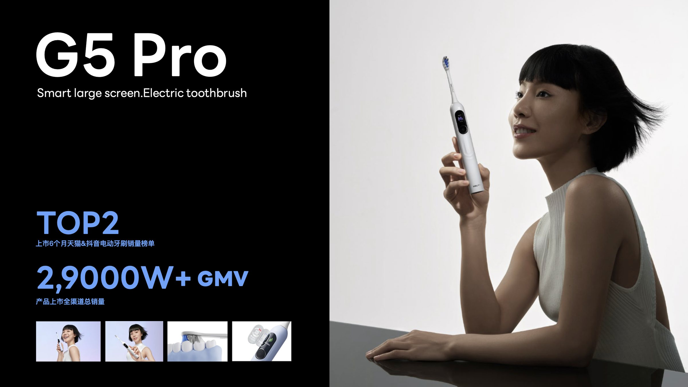
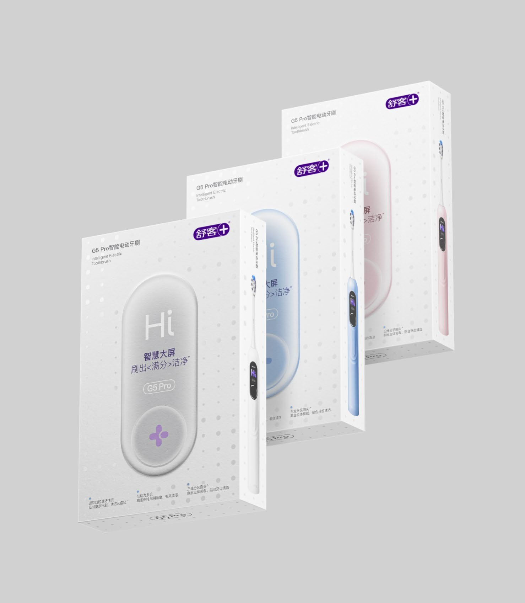
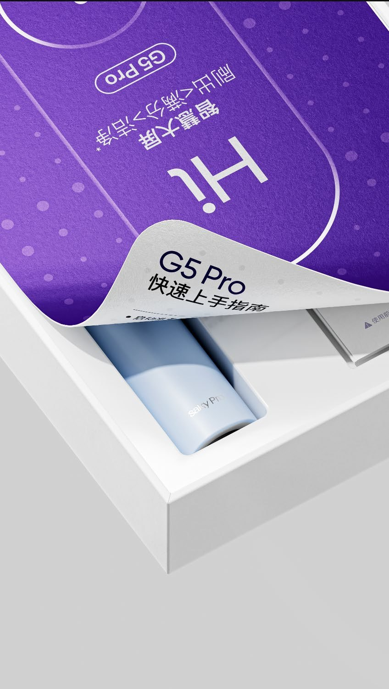
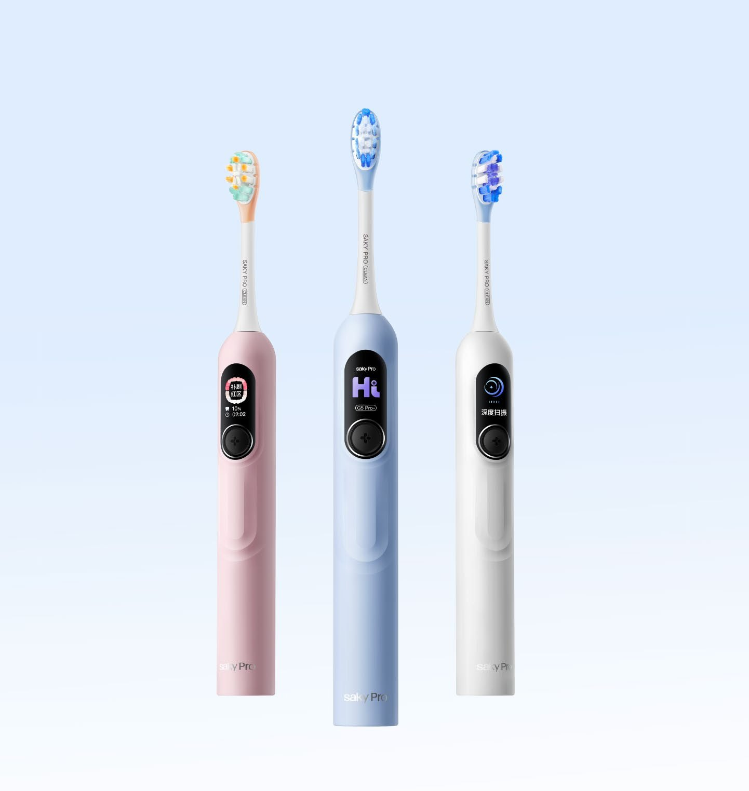
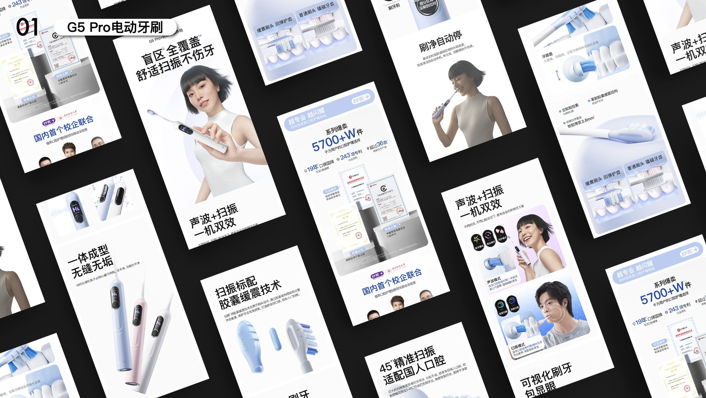
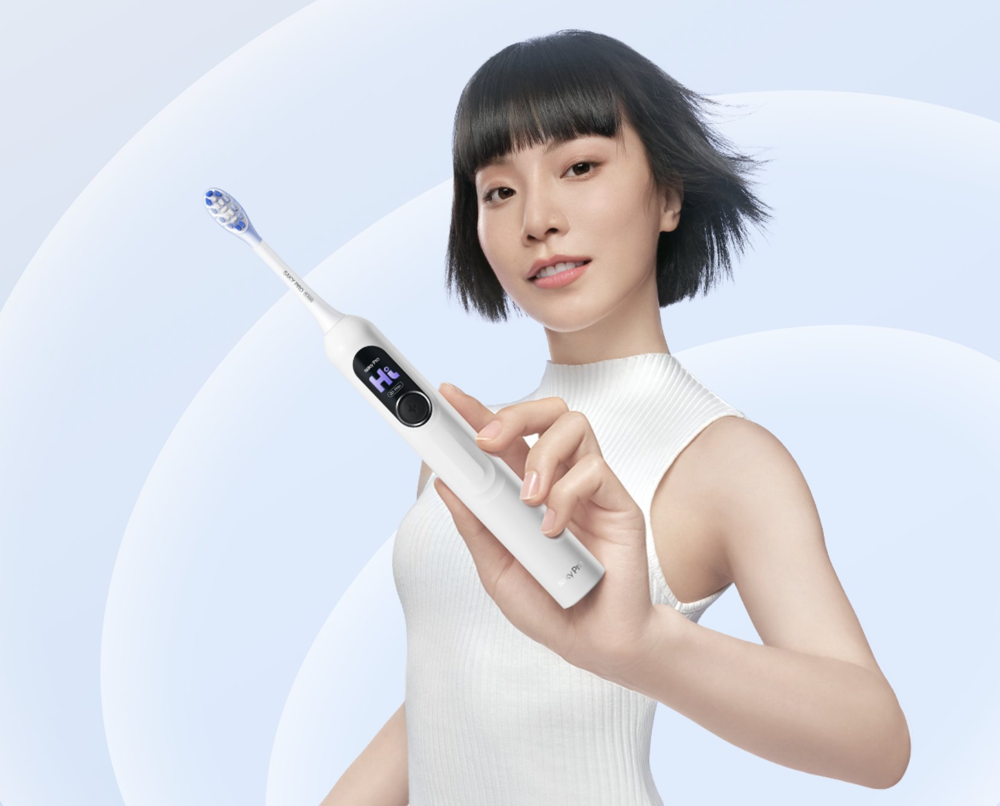

← Work — 03 / 15 · Product Visual DesignG5 Pro
A flagship launch for Shuke’s electric line: an “ultimate follower” go-to-market strategy translated into a complete visual package at the lowest possible cost. 舒客电动产品线新品，通过竞品分析得出「极致追随者」营销策略，用最小成本落地新品视觉全案，达成极致的品效合一。


Background
设计背景
Electric toothbrushes are a heavily commoditised category, so a difference the customer can see immediately — and the pull of the brand itself — is what decides the sale. Because the spend concentrates in short-video content on interest-driven commerce, the product has to be understood within a single screen.
Benchmarking against competitors and breaking down the audience gave us an “ultimate follower” strategy: follow the proven behaviour, then win on execution. The work was structured as a visual project with three connected stages — design strategy, visual element setting, and rollout planning — so content, channel rhythm and testing sat on one timeline.
目前市场上的电动牙刷产品同质化严重，直观的差异化卖点和品牌影响力是制胜的重要因素。而主要的投放场景集中在兴趣电商的短视频内容中，需要产品在一屏之内被迅速识别、读懂。
通过与对标竞品分析和用户画像拆解，得出产品的「极致追随者」营销策略，并以最小成本落地视觉全案。设计流程被拆成三段并放在同一条时间线上推进：设计策略制定、视觉元素设定、视觉落地策划，让内容、渠道节奏与测试规划协同。
Approach
设计思路
Electric Toothbrush Launch — the decisions that set the direction. G5 Pro 电动牙刷 —— 决定方向的几个选择。
-
01
Enlarge the hero claim so the shelf reads it强化卖点设计，终端迅速识别
The “smart large screen” selling point became a pill-shaped graphic, enlarged and centred in the first screen, so the claim is legible before anything else.
把「智慧大屏」主卖点做成胶囊图形并放大，首屏版心居中，让卖点在终端被迅速、直观地读出来。
-
02
A defined balance: 40 / 30 / 30定下设计平衡点：40% 科技感 + 30% 简约感 + 30% 专业感
Competitor and audience data set the ratio — 40% tech, 30% minimal, 30% professional — for an audience that is mainly women aged 20–25 who care about results.
基于竞品与用户画像数据，得出本次设计的平衡点：40% 科技感 + 30% 简约感 + 30% 专业感；目标人群以 20–25 岁女性为主，关注使用效果。
-
03
A visual hammer that repeats across the brand视觉锤与符号贯穿，强化品牌资产
A dot pattern expresses the high-frequency pulse of the cleaning mode; Shuke’s classic logo mark carries through into product ID and packaging, so it keeps reappearing in every camera cut of a short video or livestream.
用波点纹路表达脉冲模式下的高频震动；舒客经典的 LOGO 符号延续到产品 ID 与产品包装，在直播与短视频的镜头切换中全方位触达用户，强化记忆点。
Outcome
成果展示





- Result
- Top 2 on Tmall & Douyin electric toothbrush sales charts six months after launch上市 6 个月登顶天猫 & 抖音电动牙刷销量榜 TOP2
- Sales
- ¥290M+ GMV, all channels combined产品上市全渠道总销量 GMV 2.9 亿+
- Deliverables
- Visual project management · KV · detail pages · short-video & livestream assets视觉项目管理 · 主视觉 · 详情页 · 短视频与直播素材
Next project / 下一个作品
Dual-Lens Camera